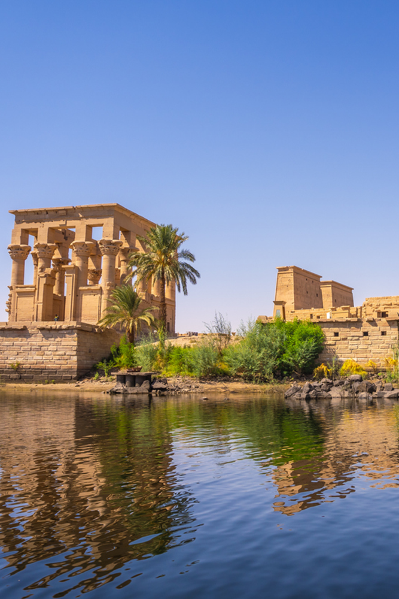

Voicie les plus beau monuments de ce pays magnifique.
Vous pouvez retrouver dans ses images une merveille du monde la pyramyde de khéops. Khéops étais un roi d'egypte.



Vous pouvez retrouver dans ses images une merveille du monde la pyramyde de khéops. Khéops étais un roi d'egypte.
